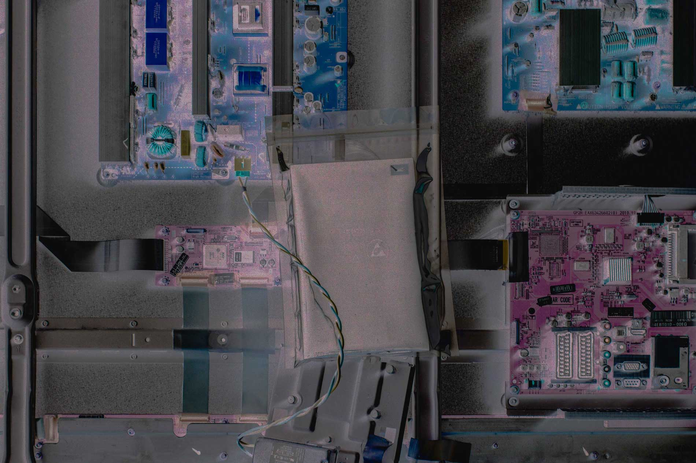
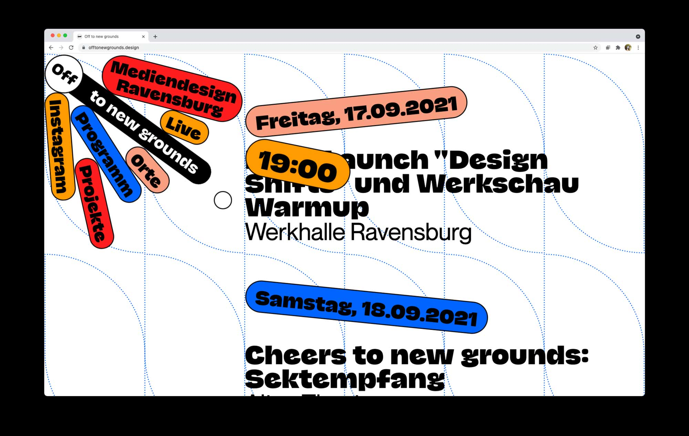
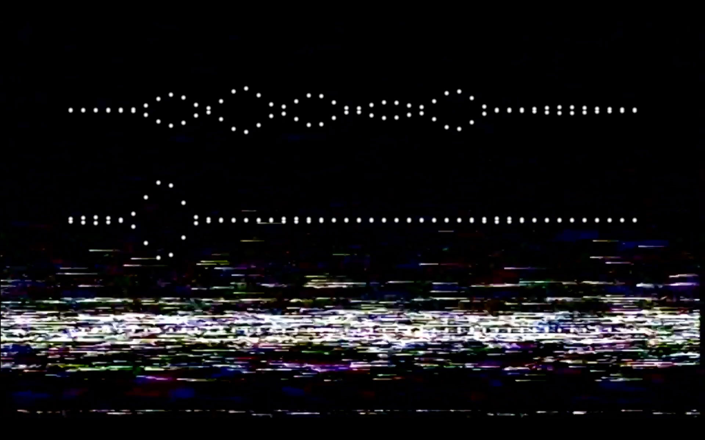
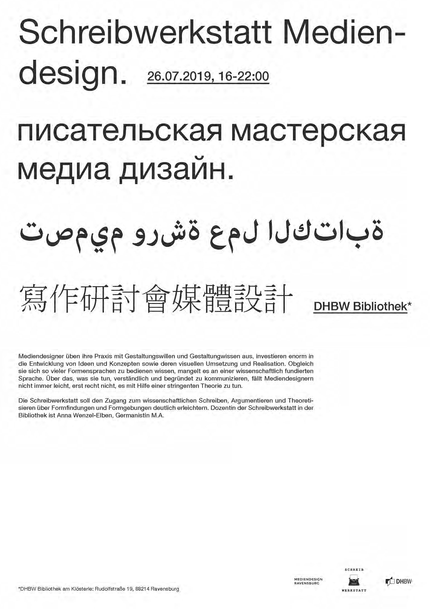

Es ist alles eitel., Book, Marius Müller, 2021

Off to new grounds, Website, DHBW Ravensburg, 2021

715 - CRΣΣKS, Visualization, Bon Iver, 2019

Schreibwerkstatt Mediendesign, Poster, Marius Müller, 2019